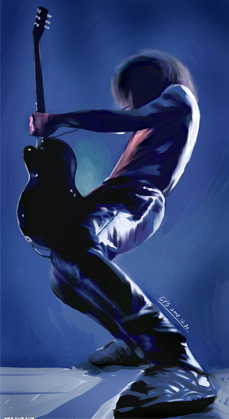

重金属音乐最早是被一些民众认为是“硬摇滚”演变过来的，其实硬摇滚与重金属通常不太容易区分，不同的人有不同的区分方法。有人认为70年代以前的叫硬摇滚，70年代以后的叫重金属，又有大多数人通过历史的角度认为他们不属于同一种类。布鲁斯味道很浓，后来传到不同的地方就形成了不同的流派。音乐上十分具有“重量”性，给听者一种歇斯底里狂躁的感觉与别的音乐有着明显的区别所以把这种音乐取名为“重金属”。金属音乐的种类很多，从节奏和旋律方面来分有分"旋律金属"和"节奏金属"无论怎样有旋律的金属音乐要比没有旋律的金属音乐要轻一些，不同流派的金属音乐它所用的音色都不一样，有的失真要重一些有的要轻一些。这种硬派风格的感觉非常起到宣泄的效果，这种重量感似乎把人体身上的压力都用这种宣泄方式发泄出来了，这种有着冷酷和刚硬气息的音乐，总给人一种很特别的感觉。
金属乐的历史包含着人性最重要的一个发展阶段，文明受到前所未有的挑战，表面上看，与此同步发展的金属乐反映的是不被父母接受而在青春期找寻一种惊世骇俗的行为方式，实际上，也是最重要的，金属乐反映的是极力要摆脱外界的束缚。回顾"西方历史"我们可以清楚的看到，由于基督教在欧洲兴起，对神公正的追求使人们产生了强烈的物质需求，促使了欧洲的中央集权化和工业革命，因而当时就产生了非本土黑格尔主义哲学，在吸取了它的理论之后，文明社会重新认识到了自身的价值，这是人类文明第一阶段之后的第二阶段，第一个阶段的标志是：社会力量开始启动，迫使人们有组织的集体工作，从而获得大规模的生产效益，这个阶段给人们灌输了一个概念：强制。迄今为止，西方传统一直缺乏这种有组织的集体行为，这是因为人们对强制的厌恶，所以通过金属乐或在青春期与父母对抗人们可以找到某种寄托，对已知的过去产生怀疑，对未知的将来产生希望，同时产生一种能够探索并确定自己存在价值的愿望。
在金属乐之前的音乐最早出现在二战以后的那代年轻人当中，随着全世界新政权的重生，新的政治理论体系应运而起，所有过时的知识理念和社会法则都濒临灭绝。他们是第一批完全生活在科技时代的年轻人，并且能够淡忘普通人对抗社会矛盾的年月。当他们不可避免的生于巨变的年代：二战将早期的外交手段糟蹋到了极至，越南战争刻画了帝国主义的本质，前者揭示了人类道德社会的沦丧，后者使美国陷入智力革命却无法产生英雄。由于那时美国和世界人民能够思考这些问题，通过自我分析，在重新评估各个新晋国家的社会法则以及人类生存价值时产生了极大的困扰，尽管西方2000多年历史有大量的革命事件可以参照，人们仍无法避开他们自己以往帝国模式的干扰，所以他们注定要重新开创。 |